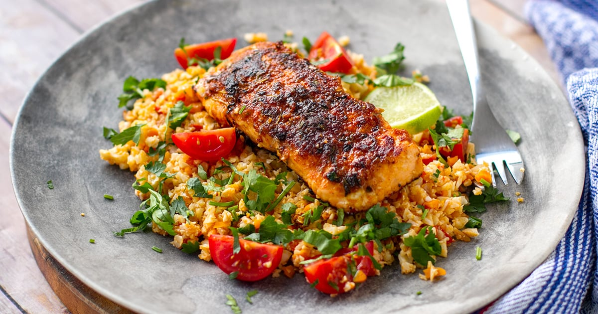

Cajun Salmon with Cauliflower Rice
Ingredients
- 2 salmon fillets
- Juice of 1 lime
- 1.5 teaspoons honey
For the spice rub:
- 1 teaspoon onion powder
- 1 teaspoon garlic powder
- 1 teaspoon paprika
- 1 teaspoon coriander dried
- 1 teaspoon thyme dried or fresh
- 1/2 teaspoon cayenne red pepper
- 1/2 teaspoon smoked paprika or chipotle chill if you have those
- 1/2 teaspoon sea salt
- 1/2 teaspoon pepper
- Coconut oil for cooking the salmon
Tomato Cauliflower Rice:
- 1 small red onion finely diced
- 2 tablespoons olive oil
- 1 teaspoon paprika powder
- 1 teaspoon coriander seed powder
- Pinch of chili flakes or powder
- 1/2 teaspoon sea salt
- 1/2 small head of cauliflower cut into florets and finely chopped
- 1 small carrot finely chopped
- 1 Roma tomato or medium round tomato, otherwise 3-4 cherry tomatoes
- 2 cloves of garlic finely diced
- 1 teaspoon butter ghee or extra olive oil
- 2 tablespoons chopped coriander or parsley
- 1-2 tablespoons chopped green onion optional, for garnish
Recipe
- Mix honey and lime juice in a bowl and add the salmon. Coat on both sides and set aside while
you prepare the cauliflower rice. Halfway through, turn the piece over so that they marinate
evenly on each side.
Mix the rub spices in a small bowl and set aside. Make the cauliflower tomato rice.
- Make the tomato cauliflower rice. Preheat a large frying pan over medium-high. Sauté the onions
with olive oil for a minute and add the spices. Stir through and then add the chopped vegetables
and butter (or ghee), and cook for 4-5 minutes over high heat. Stir through often. Finish off by
adding the fresh herbs and serve.
- To cook the salmon, heat a tablespoon or two of oil in a skillet over medium-high heat. Remove
the salmon fillets from the marinade and shake off slightly. Place on a plate and sprinkle
evenly with the spice rub (it should cover the fillets quite well). Press down with your
fingers. Turn over and cover the other side. Place in a hot skillet and cook for 3+1/2 minutes
on each side, until blackened and crispy. Towards the end of the cooking time, drizzle the
remaining lime-honey marinade over the fillets. Serve over tomato cauliflower rice.
